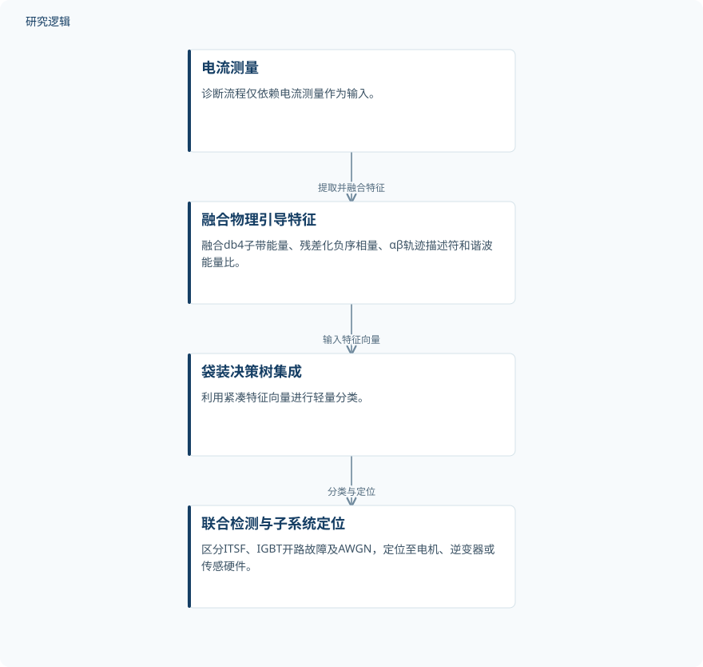

摘要解读
物理引导机器学习用于逆变器供电感应电机驱动系统的联合故障诊断
Physics-Guided Machine Learning for Joint Fault Diagnosis in Inverter-Fed Induction Motor Drives
解读更新 2026-11-10 14:41 · 依据公开摘要整理，未核验全文细节
电动车牵引驱动中的电流异常，可能来自电机故障、逆变器故障，也可能来自测量干扰。这项研究尝试仅用电流测量实现联合诊断，阅读价值在于：如何利用具有物理含义的特征，区分不同子系统的异常来源。
文章目录
早期匝间故障为何容易被掩盖
在智能电动车牵引驱动中，脉宽调制与磁场定向控制（FOC）会引入宽带谐波和非平稳启动瞬态。这些动态过程会掩盖早期定子匝间故障（ITSF）；当逆变器开关故障与测量干扰同时出现时，故障辨识更加困难。
因此，研究面对的不只是判断电机是否异常，还包括区分电机、逆变器与测量环节的问题。同时，车载控制单元对低延迟的要求，也约束着诊断方法的计算复杂度。
将电流信息压缩为物理引导特征
作者提出数据中心、物理引导的诊断流程，仅依赖电流测量。摘要列出的诊断对象包括严重程度为1–3%的ITSF、IGBT开路故障，以及信噪比为5–20 dB的加性高斯白噪声（AWGN）。
方法将db4离散小波变换子带能量、残差化负序相量、αβ轨迹描述符和谐波能量比融合为27维特征向量，再交由袋装决策树集成分类。其设计思路是通过针对性的特征提取，支持适合嵌入式边缘硬件的轻量分类。
依据摘要整理的电流联合诊断流程


仅概括摘要明确描述的输入、特征提取、分类与定位关系，不是论文原图，不表示实机部署已经验证。
下载 SVG图示关系说明
实线表示相邻阶段的信息流，虚线表示跨阶段联系或反馈。
电流测量 → 融合物理引导特征：提取并融合特征；融合物理引导特征 → 袋装决策树集成：输入特征向量；袋装决策树集成 → 联合检测与子系统定位：分类与定位
仿真中实现跨子系统定位
摘要报告了四种场景下的仿真评估，覆盖瞬态与稳态，以及有、无AWGN的组合。交叉验证准确率为91.63–98.97%，留出测试准确率为93.13–98.75%；摘要未逐一列出各场景对应的结果。
作者报告，该方法能够在电机、逆变器和传感硬件之间实现子系统级定位，并将其与容易混淆逆变器或传感伪迹和ITSF的传统阈值检测器作出区分。面向电动车数字孪生的状态监测是其应用指向，不宜据此认定完整数字孪生系统已经得到验证。
准确率之外，验证边界仍待确认
当前依据仅为摘要。摘要没有交代样本规模、类别分布、数据划分细节，也没有给出阈值检测器的具体比较配置或量化差异，因此无法判断准确率对这些设置的敏感程度。
已明确的验证范围是仿真。摘要未报告实机测试、跨电机或跨工况泛化结果，也未提供车载硬件上的推理延迟与资源占用。这些信息不足以判断实际部署表现，但不等于论文未开展相关工作。
阅读启发：关注异常来源能否被分开
阅读启发：对智能运维而言，值得继续阅读的是这些物理特征如何帮助区分故障与干扰，而不只是最终准确率。可进一步关注各类特征的具体定义、不同异常之间的误判情况，以及支撑低延迟应用判断的证据，避免把仿真分类表现直接等同于车载可用性。
以上为本站阅读启发与建议，不是论文已验证的结论。